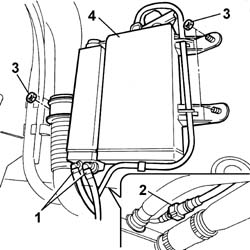

1080E20 active carbon filter for fuel vapours - r + r
- Path
- Procedures > 10 ENGINE UNIT > 1080 EXHAUST EMISSION CONTROL SYSTEM > 1080E evaporation control system > 1080E20 active carbon filter for fuel vapours - r + r
- Kind
- repair procedure (removal / refitting; the operation number is the code)
- Applies to
- engines: 1.1, 1.2 8v; all production periods
- Interactive page
- https://sloeber94.github.io/elrnDB-fPnd/en/#/2752523
Applies to: engines: 1.1; all production periods
 Removing
Removing
 Refitting
RefittingPlace the car on a lift.
Raise the car.
1. Disconnect the rapid attachments for the fuel tank supply and return pipes.
2. Disconnect the rapid connector for the enablement solenoid valve pipe.
3. Undo the nuts fixing the charcoal filter to the bodyshell.
4. Remove the active charcoal filter.

Applies to: engines: 1.2 8v; all production periods
Removing
RefittingPlace the car on a lift.
Raise the car.
1. Disconnect the rapid attachments for the fuel tanke supply and return pipes.
2. Disconnect the rapid connector for the enablement solenoid valve pipe.
3. Undo the nuts fixing the charcoal filter to the bodyshell.
4. Remove the active charcoal filter.
Applies to: engines: 1.1; all production periods
Refitting
RemovingFit the active charcoal filter and tighten the fixing nuts.
Connect the pipes using the rapid connectors.
Lower the vehicle.
Remove the vehicle from the ramp.
Applies to: engines: 1.2 8v; all production periods
Refitting
RemovingFit the active charcoal filter and tighten the fixing nuts.
Connect the pipes using the rapid connectors.
Lower the vehicle.
Remove the vehicle from the ramp.